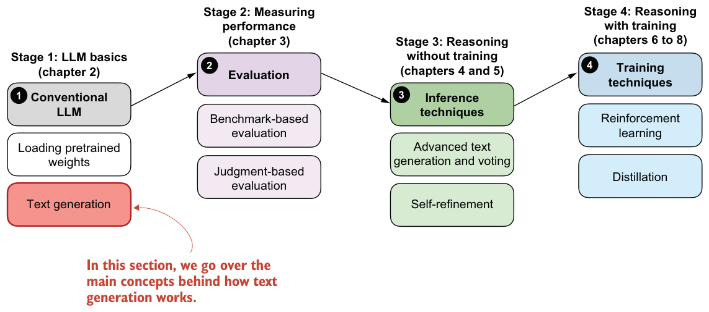
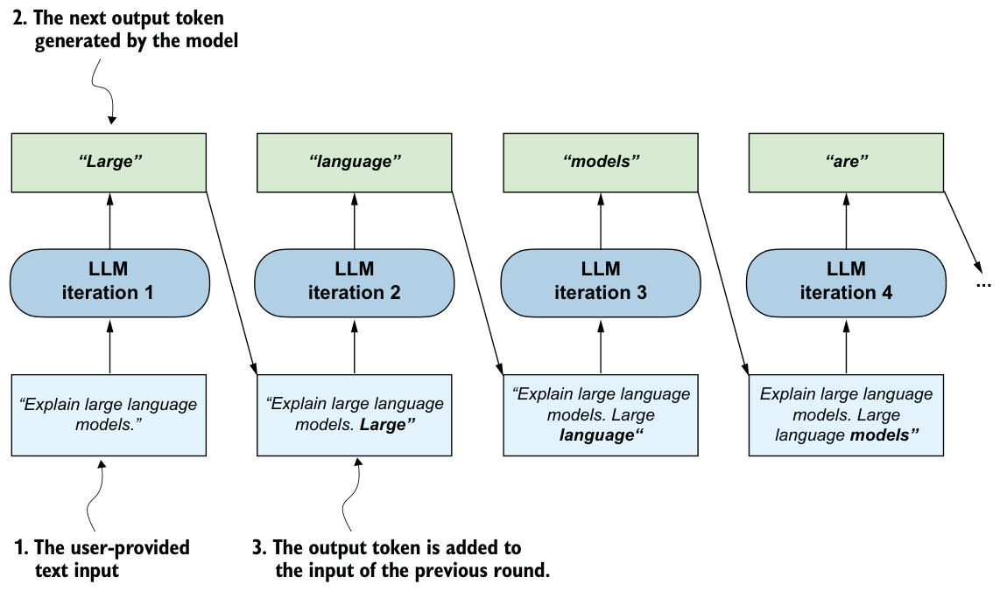
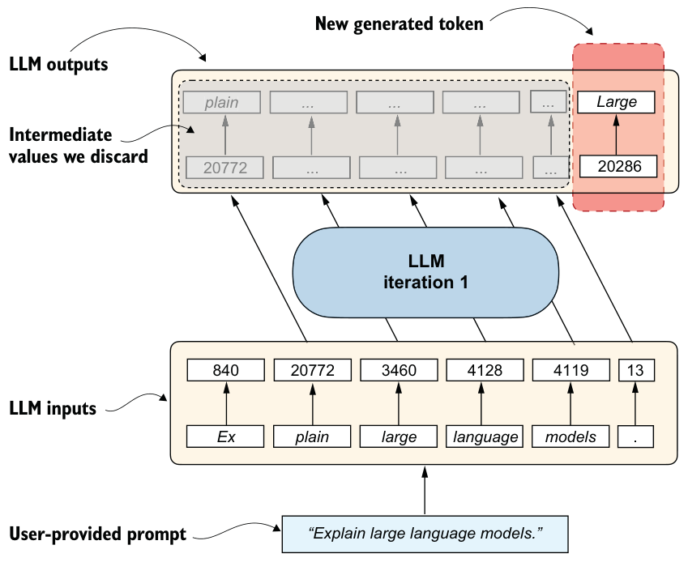

2.6Understanding the sequential LLM text generation process
Now that we’ve loaded the pretrained LLM, our goal is to write a function that uses the LLM to generate text. This function will form the foundation for reasoning-improving methods that we’ll implement later in the book, as shown in figure 2.9.

You may already know that text generation in LLMs is a sequential process in which LLMs generate one word (or token) at a time. This is often also called autoregressive text generation. Figure 2.10 presents a broad overview, with one generated output token (in the top row) shown at each step as it is fed an input prompt.
Chatbot interfaces

If we zoom in on one of figure 2.10’s iterations, we can see that the LLM processes the full input sequence in one forward pass and produces one prediction for each input position. This means that if we have six input tokens, the model returns six corresponding predictions, as illustrated in figure 2.11. The figure makes the position-by-position structure easy to see, but model outputs are not, in general, just the input prompt shifted by one position. Rather, each position produces a distribution over possible next tokens. For text generation, we only use the prediction at the last position, because that’s the one that tells us which new token to append next.
Before we implement a text generation function that uses the concept shown in figure 2.11 in each iteration of the autoregressive text generation process, let’s look at a

code example that further illustrates figure 2.11. We’ll reuse the “Explain large language models.” prompt from section 2.4:
prompt = "Explain large language models."
input_token_ids_list = tokenizer.encode(prompt)
print(f"Number of input tokens: {len(input_token_ids_list)}")
input_tensor = torch.tensor(input_token_ids_list)
input_tensor_fmt = input_tensor.unsqueeze(0)
input_tensor_fmt = input_tensor_fmt.to(device)
with torch.inference_mode():
output_tensor = model(input_tensor_fmt)
output_tensor_fmt = output_tensor.squeeze(0)
print(f"Formatted Output tensor shape: {output_tensor_fmt.shape}")The preceding code produces the following output:
Number of input tokens: 6
Formatted Output tensor shape: torch.Size([6, 151936])As we can see, we feed six input tokens into the model, which returns a
6×151,936-dimensional matrix. The 6 in this matrix corresponds to the six input tokens. The second dimension, 151,936, corresponds to the vocabulary size that the model supports. For instance, each of the six tokens is represented by a vector with
151,936 values. We can think of the values in these vectors as scores for each possible word in the vocabulary, where the highest score corresponds to the most likely word or subword (in the 151,936-entry vocabulary) to be chosen as the generated token.